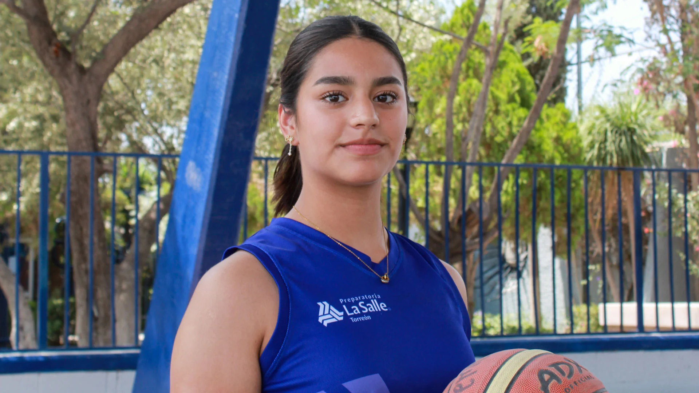
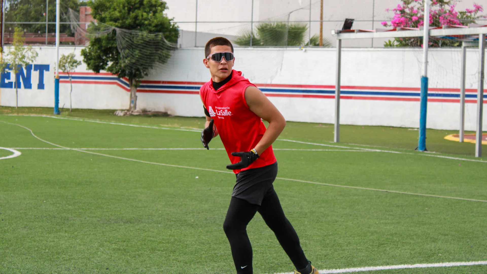
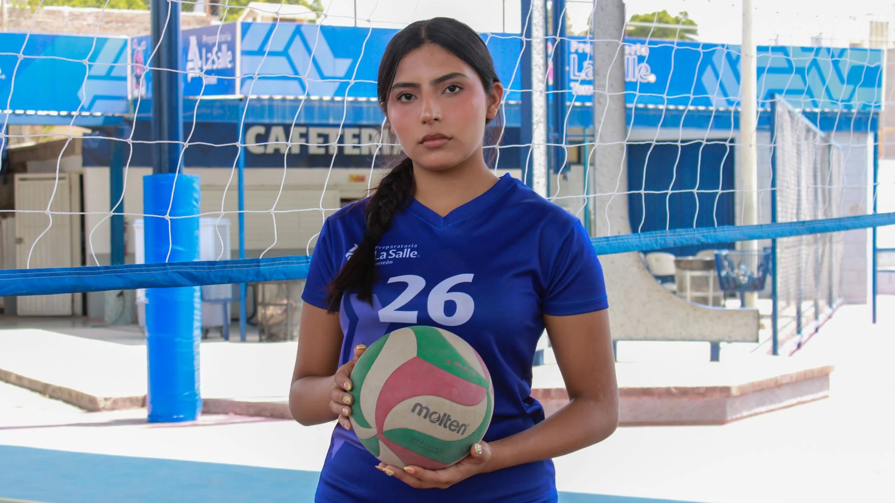
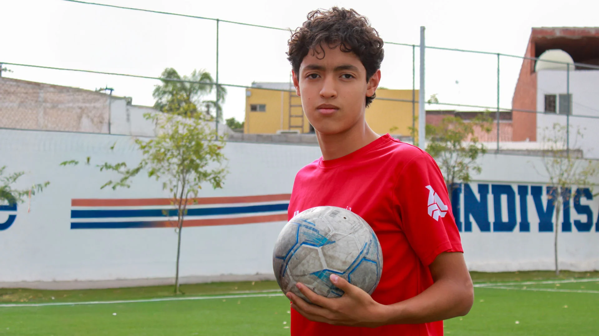
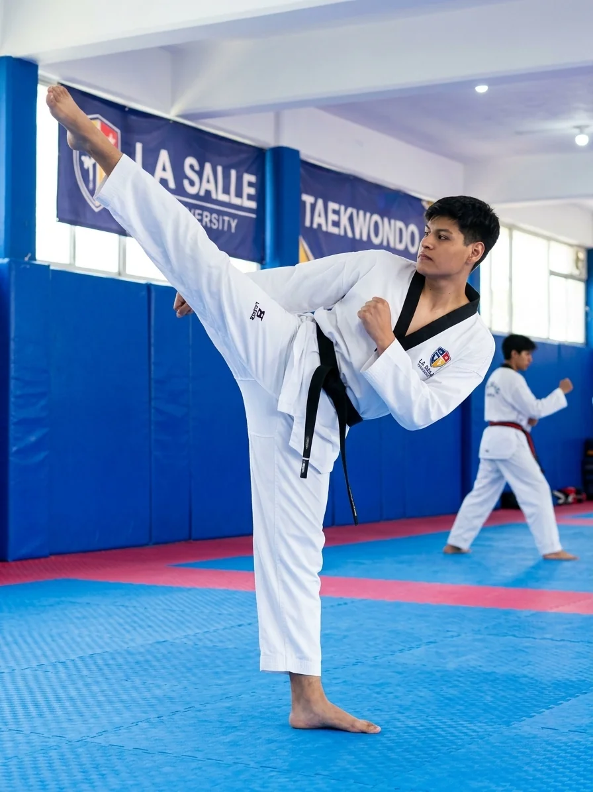
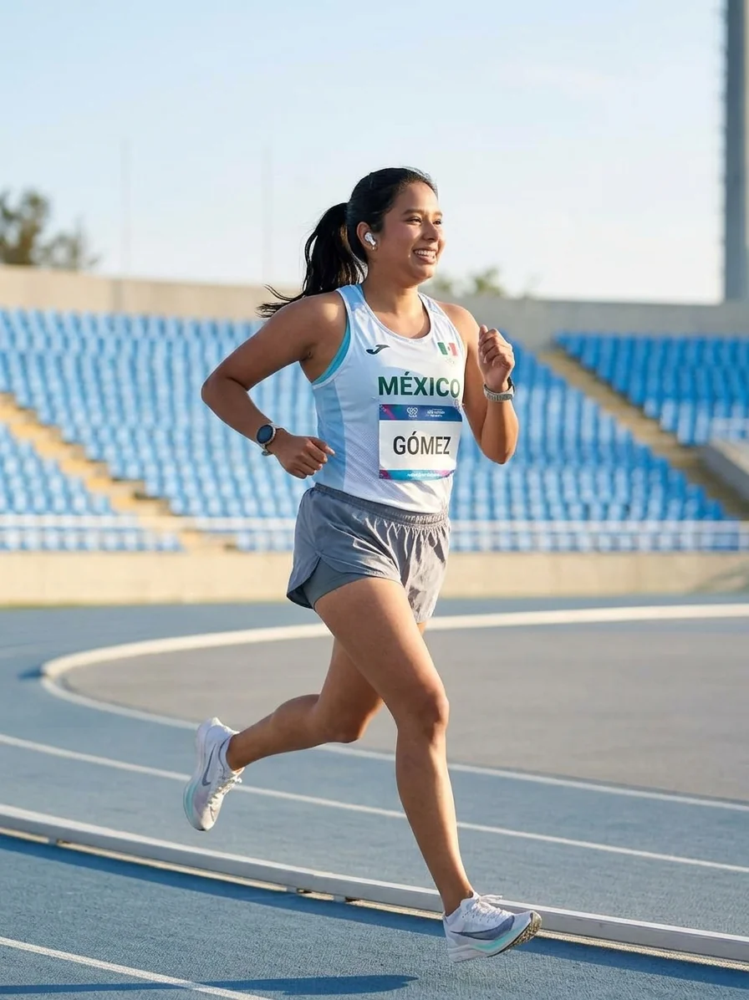

Una formacion concebida desde el paradigma de la Educación Integral, donde el educando, como persona y primer responsable de su desarrollo, encuentra sentido a su existencia en la relacion de la busqueda de la tracendencia, a través de la adquisición de conocimientos, la creacion de hábitos, el desarrollo de habilidades y destrezas, y la vivencia de valores y actitudes.
Como institucion, ofrecemos a nuestros estudiantes diversos talleres y actividades deportivas, que pueden elegir de acuerdoa a sus aptitudes, intereses y preferencias.
| Primer Semestre | Segundo Semestre | Tercer Semestre | Cuarto Semestre |
|---|---|---|---|
| La Materia y sus interacciones | Conservación de la Energía | Ecosistemas: Interacciones, Energía y Dinámica | Organismos, Estructuras y Procesos, Herencia y Evolución Biológica |
| Ciencias Sociales I | Conciencia Histórica I | Conciencia Histórica II | Conciencia Histórica III |
| Cultura Digital I | Ciencias Sociales II | Pensamiento Matemático III | Ciencias sociales III |
| Pensamiento Matemático I | Cultura Digital II | Lengua y Comunicación | Ingles IV |
| Lengua y Comunicación I | Pensamiento Matemático II | Ingles III | La Energia en los Procesos de la Vida diaria |
| Ingles I | Lengua y Comunicación II | Humanidades III | Taller de Cultura Digital |
| Humanidades I | Inglés II | Reacciones Químicas | Temas Selectos de Matemáticas II |
| Laboratorio de Investigación | Humanidades II | Temas Selectos de Matemáticas I | Pensamiento Literario |
| Formación Amplia (deportes) | Formacion Amplia (deportes) | Taller de ciencias II | Espacio y Sociedad |
| Formacion Ampliada (talleres) | Formacion Ampliada (talleres) | Formacion Ampliada | Formacion Ampliada |
| Formacion de Valores | Formacion de Valores | Formacion de Valores | Formacion de Valores |
| Desarrollo de Habilidades del Pensamiento | Orientación Vocacional | Cultura Vocacional | Cultura Vocacional |
| Cultura Vocacional | Cultura Vocacional |
Fomentamos la actividad física y el trabajo en equipo a través de una variedad de deportes, incluyendo fútbol, baloncesto, voleibol y atletismo. Nuestros programas deportivos están diseñados para desarrollar habilidades físicas, disciplina y espíritu deportivo.






Impulsamos la formación integral de nuestros alumnos mediante experiencias artísticas, culturales y sociales que fortalecen la identidad y fraternidad lasallista.
Explora la expresión corporal, la proyección de la voz y la puesta en escena para desarrollar autoexpresión y confianza ante el público.
Perfecciona la técnica vocal y la ejecución instrumental colaborativa para interpretar repertorios que enriquecen los eventos comunitarios.
Diseña, programa y construye prototipos automatizados aplicando principios de mecatrónica y pensamiento lógico-matemático.
Aprende lenguajes visuales, manejo de cámara, iluminación y edición digital para narrar historias impactantes de alto contenido creativo.
Amplía tu visión global compartiendo tradiciones, idiomas y costumbres para promover el respeto a la diversidad y la empatía internacional.
Fortalece tus competencias de oratoria, argumentación estructurada y negociación orientadas a la toma de decisiones y al servicio a la comunidad.
Fomenta el análisis crítico y la apreciación literaria a través de lecturas compartidas y diálogos que enriquecen el pensamiento reflexivo.
Transforma ideas en proyectos sostenibles aprendiendo sobre modelos de negocio, innovación con sentido social y finanzas básicas.
Vive los valores lasallistas de fe, fraternidad y servicio participando activamente en proyectos de impacto comunitario y voluntariado.
Domina las técnicas de comunicación corporativa, la etiqueta profesional y la gestión de imagen en la organización de eventos institucionales.
Capacitación técnica y preprofesional avanzada para dotar a los estudiantes de herramientas metodológicas e innovadoras frente a los retos universitarios.
Aprende a recopilar, limpiar y visualizar grandes volúmenes de datos para tomar decisiones estratégicas fundamentadas en información real.
Modelado 3D profesional e ingeniería asistida por computadora para el diseño detallado de piezas, ensamblajes y prototipos industriales.
Optimiza la productividad académica mediante el dominio avanzado de herramientas colaborativas en la nube, gestión de datos y automatización.
Explora conceptos fundamentales de anatomía, primeros auxilios y medicina preventiva como preparación clave para las áreas biomédicas.
Entrenamiento enfocado en dominar las habilidades de lectura, escritura, escucha y habla requeridas para exámenes internacionales como Cambridge o TOEFL.